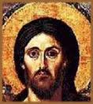

Os Evangelhos
Quase tudo o que sabemos da vida de Jesus vêm
de narrativas conhecidas como evangelhos (palavra de
origem grega que significa boa nova). A veracidade
desses textos chegou a ser contestada por historiadores tão
influentes quanto Ernest Renan (1823-1892) e teólogos
tão importantes quanto Rudolf Bultmann (1884-1976).
De fato, vários evangelhos seguem a estrutura
de um gênero literário muito apreciado na Antigüidade:
os relatos sobre a vida de homens ilustres. Seus autores não
tinham a preocupação de documentar rigorosamente
os acontecimentos narrados. E misturavam, com muita liberdade,
ingredientes históricos, lendários e doutrinários.
É esse tempero peculiar que confere às obras seu
sabor inconfundível.
As influências
São evidentes nos evangelhos as influências
de antigas tradições judaicas, de mitologias pagãs
(greco-romana e orientais) e de correntes esotéricas
do século 1 d.C.. Mas isso não diminui sua confiabilidade
como fontes de informação factual. Ultrapassando
as objeções de Renan e Bultmann, os pesquisadores
da atualidade tendem a valorizá-los cada vez mais.
Há um grande número de evangelhos.
Apenas quatro são aceitos por todas as igrejas cristãs:
os chamados canônicos (de acordo com a regra),
atribuídos aos redatores Marcos, Mateus, Lucas e
João. Os demais foram considerados apócrifos
(não-autênticos). Porém, alguns
deles vêm despertando grande interesse entre os estudiosos.
É o caso do Evangelho de Tomé, redescoberto
em Nag Hammadi, no Egito, em 1945.
O evangelho mais antigo, o de Marcos, deve ter
sido redigido em sua forma final entre os anos 66 e 68 d.C.
(certamente antes de 70 d.C.), data da destruição
de Jerusalém pelos romanos, pois não há
nele qualquer alusão a esse importante acontecimento.
Na década de 80 d.C., apareceram, na forma como os conhecemos
hoje, os evangelhos de Mateus e Lucas. Entre 90 e 110 d.C.,
concluiu-se a redação do evangelho de João.
Na mesma época ou pouco depois, foi finalizado o Evangelho
de Tomé.
Os evangelhos
são narrativas confiáveis?
Um dos argumentos levantados contra a credibilidade
dos evangelhos são as datas relativamente tardias de
sua composição. Afirma-se que eles foram escritos
várias décadas depois dos fatos narrados, quando
a memória dos acontecimentos já estava deturpada.
Mas esse ponto de vista é rejeitado hoje pelos especialistas.
Pois cada evangelho passou por uma longa e complexa elaboração
antes de chegar ao texto final. Para se ter uma idéia,
o evangelho canônico mais recente, o de João, levou
quatro décadas até alcançar sua forma definitiva.
Isso já deslocaria a versão original dos anos
90-110 para os anos 50-70. É pouco provável que
qualquer um dos evangelhos citados seja obra de um único
homem. A análise textual indica que eles correram de
mão em mão antes de assumirem o formato que conhecemos
hoje.
Tudo começou
com o Querigma
Os
pesquisadores acreditam que, antes de qualquer registro escrito,
se consolidou, muito cedo, uma tradição oral acerca
da vida e da mensagem de Jesus. Seu núcleo era o querigma
(palavra grega que significa anúncio). O querigma
era uma fórmula curta, de forte impacto emocional, utilizada
pelos discípulos para converter os ouvintes. Em torno
dele, juntaram-se frases e parábolas atribuídas
a Jesus e um relato mais detalhado de sua morte e ressurreição.
À medida que as testemunhas oculares dos acontecimentos
começaram a morrer, as comunidades cristãs sentiram
a necessidade de fixar essa tradição por escrito.
Os textos primitivos passaram, depois, por sucessivas reelaborações,
nas quais o material original recebeu acréscimos, sofreu
cortes ou foi adaptado às concepções do
grupo a que pertenciam os redatores.
Por que sinóticos?
Em sua forma final, os quatro evangelhos canônicos
aparecem redigidos em grego, o idioma falado pelos judeus que
viviam fora da Palestina. O texto atribuído a Tomé
é a versão em língua copta de um original
grego. Os evangelhos de Marcos, Mateus e Lucas apresentam tantas
semelhanças que era costume colocá-los em colunas
paralelas, de modo que pudessem ser abarcados com um só
olhar. Daí serem chamados de sinóticos.
Eles possuem 330 versículos em comum. Acredita-se que
sua redação passou por três etapas: a arcaica,
a intermediária e a final. Ao longo dessas etapas, os
redatores teriam se influenciado uns aos outros. E também
utilizado materiais retirados de documentos independentes, jamais
localizados.
Essa hipótese, baseada numa análise
crítica dos textos finais, recebeu, em 1992, um reforço
espetacular. Foi a descoberta, numa das grutas do sítio
arqueológico de Qumran, na região do Mar Morto,
em Israel, de um fragmento de papiro, datado do ano 50 d.C.,
onde se pode ler, em caracteres gregos, trechos de dois versículos
do evangelho de Marcos. É impossível saber se
o fragmento corresponde ao próprio evangelho ou a algum
documento perdido, que o redator utilizou como fonte. De qualquer
modo, o achado desmente a idéia de uma composição
tardia e, portanto, pouco confiável das narrativas evangélicas.
Duas décadas depois da morte de Jesus, sua história
já estava sendo escrita.
A época
em que Jesus viveu
Na época em que Jesus nasceu, os territórios
que correspondem hoje a Israel e à Palestina se encontravam
sob domínio romano. Antes disso, desde o século
6 a.C., a região fora conquistada sucessivamente por
babilônios, persas e gregos. Roma consolidou sua ocupação
em 63 a.C.. E, no ano 40 a.C., o estrangeiro Herodes foi proclamado
rei da Judéia pelo senado romano. Seu pai, Antípatro,
ocupara a função de procurador na administração
romana - cargo cuja principal tarefa consistia em supervisionar
a cobrança de impostos. Com muita habilidade política
e nenhum escrúpulo, um exército de mercenários
e as bênçãos de Roma, Herodes impôs
seu reinado sobre um território que se estendia da Síria
ao Egito. Foi chamado o Grande graças a um fabuloso programa
de obras urbanísticas e arquitetônicas.
O governo de
Herodes
Em seu governo, Jerusalém e muitas outras
cidades foram reurbanizadas à moda romana: cortadas de
ponta a ponta por grandes avenidas (o cardo máximo),
subdivididas por ruas formando ângulos retos e embelezadas
com palácios, anfiteatros, hipódromos, piscinas
e jardins. Acima de todas as obras, destacou-se a suntuosa reconstrução
do Templo de Jerusalém, com a qual o rei esperava conquistar
a simpatia dos judeus, que o odiavam. O preço desse frenesi
de edificações foi a extorsão e a opressão
ilimitadas do povo. Constantemente amedrontado pela idéia
de perder o poder, Herodes recorreu a todo tipo de crime, inclusive
o assassinato de membros de sua própria família.
Quando ele enfim morreu, no ano 4 a.C., o reino foi dividido
entre seus filhos Arquelau, Filipe e Herodes Antipas, que, sem
possuírem o talento do pai, seguiram fielmente seu figurino
político.
Jesus nasceu ainda no reinado de Herodes, viveu
em territórios governados por seus filhos e morreu sob
o poder do romano Pôncio Pilatos, procurador da Judéia
entre 26 e 36 d.C.. Foi um período excepcionalmente conturbado
na história do povo judeu. A cobrança de impostos,
a opressão política e a ingerência estrangeira
em assuntos religiosos despertavam exaltada oposição
popular e geravam um clima de revolução iminente.
Na década de 60 d.C., 30 anos depois da morte de Jesus,
o país explodiu em levantes generalizados contra o domínio
romano. A repressão a esse movimento insurrecional culminou,
em 70 d.C., com a destruição de Jerusalém
pelas legiões comandadas por Tito, futuro imperador de
Roma.